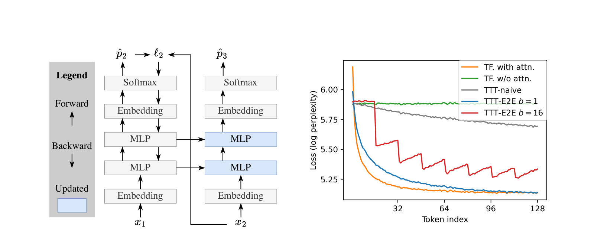
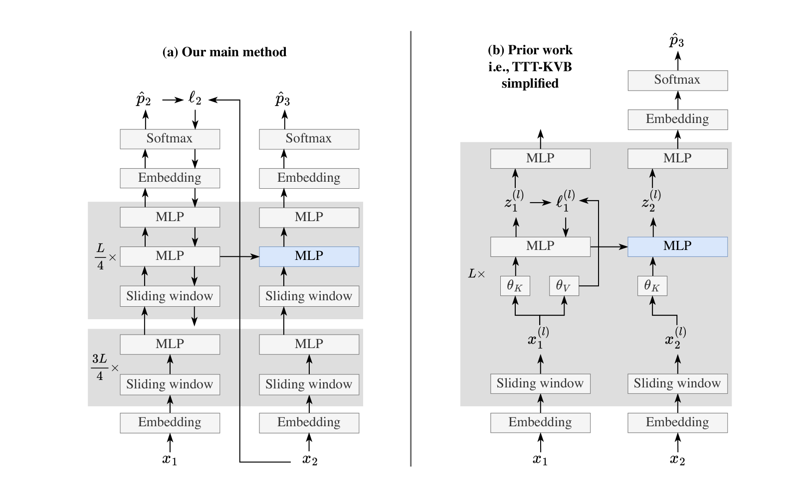
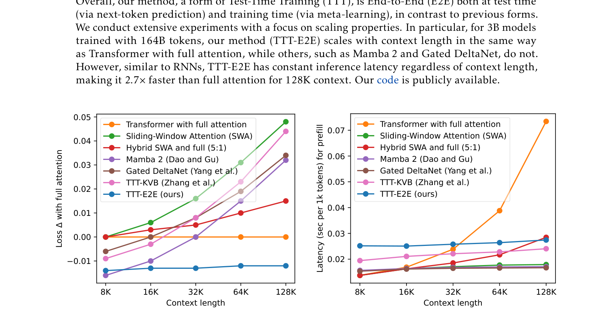
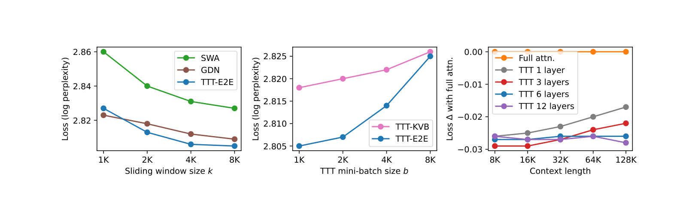
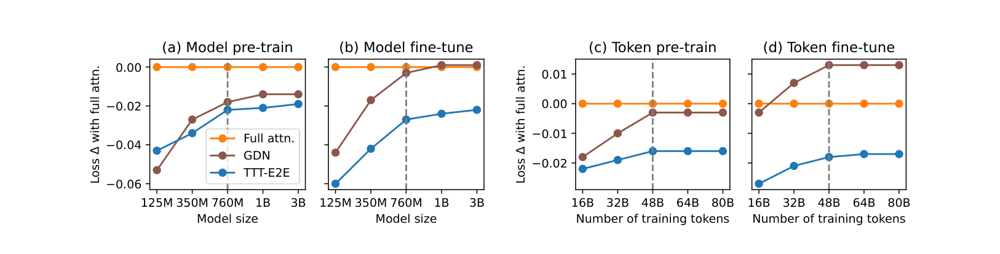

TTT 是什么：测试时训练的底层逻辑
在讲这篇论文之前，必须先搞懂一个概念：Test-Time Training（TTT，测试时训练）。如果你之前没接触过这个方向，这一章就是为你写的。
传统范式：训练 → 部署，模型从此静止
我们熟悉的大模型使用方式是这样的：先用海量数据预训练，然后在推理时冻结所有参数，输入一个 prompt，模型输出一个回答。整个推理过程中，模型的权重不会发生任何变化——它就像一个已经写完的百科全书，你只能查阅，不能在阅读过程中往里面写新东西。
这种"训练-部署"范式有一个根本局限：模型无法根据当前输入的上下文动态调整自己。如果输入是一段很长的文档，模型只能靠注意力机制"逐字扫描"来理解它，而不能像人一样"读着读着就理解了"。
TTT 的核心思想：推理时也做梯度下降
TTT 打破了这个范式。它的想法非常朴素：为什么不在推理时也让模型做一点梯度下降呢？
具体来说，当模型处理一段输入时，它不只是"前向传播"算出输出，还会：
- 用输入本身构造一个自监督损失（比如"预测下一个 token"）；
- 对这个损失做一步或几步梯度下降，更新模型的一小部分参数；
- 用更新后的参数来做最终的预测。
这样，模型在处理输入的过程中，就把输入的信息"压缩"进了自己的参数里。等需要预测下一个 token 时，参数里已经包含了前面所有输入的信息——参数本身变成了记忆。
模型像一个学生，TTT 让它在考试时还能翻书学习
传统推理：学生进考场，发卷子，只能用脑子里已有的知识答题，不能在考试过程中学习。
TTT 推理：学生进考场，发卷子，允许他在答题前先读一遍卷子、从卷子中学习规律、调整自己的思路，然后再答题。卷子越长，他能学到的越多。
关键区别：TTT 更新的是模型参数（"思路"），不是把输入存在上下文里（"草稿纸"）。参数的存储空间是常数，不随输入长度增长。
TTT 的两个关键问题
理解了 TTT 的基本思想后，有两个问题自然浮现：
- 用什么损失来做测试时训练？——这决定了模型从输入中学到什么。最常见的是"重建损失"（让模型重建输入本身），但这篇论文认为应该用"next-token prediction"（预测下一个 token），因为这才是语言模型最终要做的事。
- 训练时怎么准备模型，让它适合测试时训练？——如果训练时只优化"开箱即用"的 loss，模型可能不擅长"测试时再学几步"。这篇论文用元学习（meta-learning）来解决：训练时就模拟测试时的训练过程，优化"训练后再测试时训练"的最终 loss。
这两个问题正是这篇论文的核心贡献。下面进入论文本身。
长上下文的困境：全注意力太贵，RNN 太弱
有了 TTT 的基础，现在看这篇论文要解决的具体问题：长上下文语言建模。
论文的开篇论证非常清晰，可以拆成三步：
第一步：全注意力的代价随上下文线性增长
标准 Transformer 的自注意力（full attention）在处理每个新 token 时，必须和之前所有 token 的 key、value 做比较。因此：
- 预填充（prefill）阶段的计算复杂度是 $O(T^2)$（$T$ 是上下文长度）；
- 解码（decode）阶段每 token 的复杂度是 $O(T)$。
当 $T$ 从 8K 涨到 128K 时，全注意力的代价变得非常昂贵。
第二步：RNN 类方法虽然常数代价，但长上下文效果变差
Mamba 2、Gated DeltaNet 等 RNN 类架构每 token 的代价是常数 $O(1)$，但论文的实验（Figure 1）显示：上下文越长，它们相对于全注意力的 loss 差距越大。原因是 RNN 的状态是固定大小的压缩，长上下文中的信息会被"挤掉"。
第三步：滑动窗口注意力是常数代价，但窗口外的信息完全丢失
滑动窗口注意力（Sliding-Window Attention, SWA）只关注最近的 $k$ 个 token，代价是常数。但窗口之外的信息模型完全看不到——它本质上是一个"只能看最近几页书"的读者。
论文的核心问题：如何在常数代价下，让模型"用得好"长上下文？
全注意力：效果好，但贵（$O(T)$ 每 token）。RNN：便宜（$O(1)$），但长上下文效果差。滑动窗口：便宜，但窗口外信息丢失。论文要找的是第四种可能：常数代价 + 长上下文效果好。答案就是 TTT——让滑动窗口模型在测试时通过梯度下降把窗口外的信息压缩进参数。
把长上下文看作 continual learning，而不是架构设计
论文最根本的视角转换是：不把长上下文看作一个"架构问题"（怎么设计更好的注意力），而是看作一个"持续学习问题"（怎么让模型在处理输入的过程中不断学习）。
这个视角转换带来了一个简洁的方案：
- 架构：只用最普通的 Transformer + 滑动窗口注意力（不发明新架构）；
- 测试时：模型在处理上下文时，通过 next-token prediction 损失做梯度下降，把上下文信息压缩进 MLP 层的参数；
- 训练时：通过元学习优化模型的初始化，让它"天生就擅长测试时学习"。
论文称之为 TTT-E2E（End-to-End Test-Time Training），"端到端"体现在两个方面：
- 测试时端到端：内循环（测试时训练）直接优化 next-token prediction loss（模型最终的目标），而不是中间层的重建损失；
- 训练时端到端：外循环（元学习）直接优化"测试时训练后的最终 loss"，而不是"开箱即用的 loss"。
下面用一个玩具例子来具体说明 TTT 是怎么工作的。
玩具例子：一个没有注意力的 Transformer，如何靠 TTT 获得记忆
为了隔离 TTT 的效果，论文构造了一个"很傻"的架构：把 Transformer 中所有自注意力层都去掉，只留 MLP 层。这个架构没有任何跨 token 的记忆能力——它本质上是一个 bigram（只看前一个 token 来预测下一个）。

TTT 的具体操作
设这个只有 MLP 的架构为 $f$，权重为 $W$。给定上下文 $x_1, x_2, \ldots, x_T$，TTT 的操作是：
式 (1)-(2)：TTT 的读取与写入
$$\ell_t(W) = \mathrm{CE}\big(f(x_{t-1}; W),\, x_t\big)$$$$W_t = W_{t-1} - \eta \nabla_W \ell_t(W_{t-1})$$$\ell_t$ 是第 $t$ 步的 next-token prediction 损失（交叉熵）：用 $x_{t-1}$ 预测 $x_t$。$W_t$ 是更新后的权重，$\eta$ 是学习率，$\nabla_W \ell_t$ 是损失对权重的梯度。每处理一个 token，就做一步梯度下降。
这个过程的直觉是：
- 处理 $x_1$ 时，用 $x_1$ 预测 $x_2$，算 loss，做一步梯度下降——$x_1$ 的信息被写进了权重；
- 处理 $x_2$ 时，用更新后的权重预测 $x_3$，再算 loss，再做一步梯度下降——$x_1, x_2$ 的信息都在权重里了；
- ……
- 最后预测 $x_{T+1}$ 时，用的权重 $W_T$ 已经包含了所有 $x_1, \ldots, x_T$ 的信息。
这就是 TTT 的魔法：权重本身变成了一个常数大小的记忆，不管上下文多长，权重的维度不变。
为什么 next-token prediction 是正确的 TTT 损失？
之前的 TTT 方法（如 TTT-KVB）用的是中间层的重建损失（让某一层的输出重建输入）。这篇论文认为这不对——模型最终要做的是 next-token prediction，那测试时训练也应该用同一个目标。这样，测试时学到的参数变化直接服务于最终任务，而不是先服务于重建、再间接地服务于预测。实验（Table 1）显示，把重建损失换成 next-token prediction 后，loss 从 2.818 降到 2.805。
元学习：学习如何在测试时学习
上一章讲了测试时怎么做 TTT。但还有一个问题：训练时怎么准备模型，让它适合测试时训练？
朴素方法的问题
最朴素的想法是：训练时就用标准的 next-token prediction 损失训练，训练完直接拿去做 TTT。论文称之为 TTT-naive。
但这有一个训练-测试不匹配：训练时优化的是"用初始权重 $W_0$ 直接预测"的 loss，而测试时实际用的是"经过 TTT 更新后的权重 $W_T$ 来预测"的 loss。两者不是同一个目标，所以训练好的 $W_0$ 不一定适合做 TTT。
元学习解决方案
论文的解决方案是元学习（meta-learning）：训练时就模拟测试时的 TTT 过程，优化"TTT 之后的最终 loss"。
式 (3)：TTT-E2E 的训练目标
$$L(W_0; X) = \frac{1}{T} \sum_{t=1}^{T} \ell_t(W_{t-1})$$$W_0$ 是初始权重（训练时要优化的对象），$X = (x_1, \ldots, x_T)$ 是训练序列，$W_{t-1}$ 是经过前 $t-1$ 步 TTT 更新后的权重。这个 loss 是"每一步 TTT 后的预测 loss"的平均。优化 $W_0$ 使得"经过 TTT 后"的整体 loss 最低。
对比朴素方法的训练目标：
式 (4)：TTT-naive 的训练目标（不匹配）
$$L_{\text{naive}}(W_0; X) = \frac{1}{T} \sum_{t=1}^{T} \ell_t(W_0)$$注意这里所有 $\ell_t$ 都用 $W_0$（初始权重）计算，没有模拟 TTT 的更新过程。这就是训练-测试不匹配的根源。
梯度的梯度
元学习的一个技术细节是：因为 $W_{t-1}$ 本身是通过梯度下降得到的（式 2），所以 $\nabla_{W_0} L$ 涉及梯度的梯度（second-order gradient）。现代深度学习框架（PyTorch 等）可以高效计算这种二阶梯度，开销不大。
在元学习的术语中：
- 内循环（inner loop）：测试时的 TTT 梯度下降（式 2）；
- 外循环（outer loop）：训练时优化 $W_0$ 的元学习梯度下降（式 3）。
元学习让模型"天生会学习"，而不是"天生知识多"
标准预训练优化的是 $W_0$ 本身的预测能力（"知识多"）。元学习优化的是 $W_0$ 作为 TTT 起点的质量（"会学习"）。一个好的 $W_0$ 不一定开箱即用最强，但它在测试时经过几步梯度下降后能变得很强。这和 MAML（Model-Agnostic Meta-Learning）的思想完全一致——TTT-E2E 本质上就是把 MAML 用到了长上下文语言建模上。
小批量 TTT + 滑动窗口：解决效率与稳定性
到目前为止的 TTT 有两个实际问题：
- 效率：内循环每 token 做一步梯度下降，无法并行；
- 稳定性：每步梯度只基于单个 token，容易梯度爆炸。
两个问题的共同根源是：式 (2) 用的是在线梯度下降（batch size = 1）。解决方案是小批量梯度下降（mini-batch）。
小批量 TTT
把 $T$ 个 token 分成 $T/b$ 个批次，每批 $b$ 个 token，每批做一步梯度下降：
式 (5)-(6)：小批量 TTT
$$W_i = W_{i-1} - \eta \frac{1}{b} \sum_{t=(i-1)b+1}^{ib} \nabla \ell_t(W_{i-1})$$$$L(W_0; X) = \frac{1}{T} \sum_{i=1}^{T/b} \sum_{t=(i-1)b+1}^{ib} \ell_t(W_{i-1})$$$b$ 是小批量大小。$W_i$ 是处理完第 $i$ 批后的权重。每批内的 $b$ 个 token 可以并行计算梯度，然后取平均做一步更新。$b=1$ 时退化为式 (2)-(3)。
新问题：小批量内变成了 bigram
小批量带来了一个新问题：在同一批内，所有预测都用同一个 $W_{i-1}$（批开始时的权重），而不是逐步更新的 $W_{t-1}$。这意味着批内的 token 之间没有 TTT 带来的记忆——模型在批内退化成了 bigram。
论文的解决方案非常直接：给架构加上滑动窗口注意力。滑动窗口负责处理批内（以及窗口内）的短程依赖，TTT 负责把窗口外的长程信息压缩进参数。两者互补。
滑动窗口注意力
负责短程依赖：每个 token 能看到最近 $k$ 个 token。窗口内的信息直接通过注意力访问，不需要压缩。
实验中 $k=8K$
TTT（参数记忆）
负责长程依赖：窗口外的信息通过梯度下降压缩进 MLP 参数。参数是常数大小，不随上下文增长。
实验中 batch $b=1K$
关键约束
必须满足 $k \geq b$：窗口要能覆盖整个小批量，这样模型在做 TTT 梯度下降之前，已经通过注意力"看到"了批内所有 token。
$k=8K, b=1K$，满足

实现细节：三个工程决策
论文有三个实现细节对最终结果至关重要：
细节 1：只 TTT MLP 层
在 TTT 的内循环中，只更新 MLP 层的参数，冻结 embedding、normalization 和注意力层。原因是更新注意力层会导致外循环（元学习）的不稳定。
细节 2：只 TTT 最后 1/4 的 block
不是所有 MLP 层都做 TTT，只更新最后 1/4 的 block。这是一个计算量与记忆容量的权衡：更新更多层能存更多信息，但反向传播的计算量也更大。消融实验（第 9 章）验证了 1/4 是最优选择。
细节 3：每个更新 block 有两个 MLP 层
TTT 的一个担忧是：测试时的梯度更新会不会"覆盖"掉预训练学到的知识？论文用最简单的方式解决：在每个做 TTT 的 block 里，加一个静态的、不更新的第二 MLP 层作为"安全存储"，专门保留预训练知识。为了公平比较，整个网络的 MLP 隐藏维度都相应缩小，保持总参数量不变。
解码多个 token
前面讨论的是"预填充 $T$ 个 token，解码 1 个 token"。解码多个 token 时，方法自然延伸：每解码出 $b$ 个 token，就对这批解码出的 token 做一次 TTT 更新，然后继续解码。这样模型在生成过程中也能持续学习。
实验结果：常数代价下的全注意力级别表现

核心结果
所有模型都是 3B 参数，用 164B token 训练。核心发现：
- Loss scaling：TTT-E2E 的测试 loss 随上下文长度的变化方式与全注意力相同——上下文越长，loss 越低。而 Mamba 2、Gated DeltaNet 等 RNN 方法在长上下文上 loss 反而变差。
- 延迟：TTT-E2E 的预填充延迟是常数（不随上下文增长），128K 时比全注意力快 2.7×。
- 绝对 loss：在 128K 上下文上，TTT-E2E 的 loss 几乎追平全注意力，远优于 SWA 基线和所有 RNN 基线。
替代推导验证
论文还从 prior work TTT-KVB 出发，通过三步推导得到 TTT-E2E，验证了方法的等价性：
| 方法 | Loss | 与 SWA 基线的差 |
|---|---|---|
| SWA (k=8K) 基线 | 2.827 | – |
| TTT-KVB (Zhang et al.) | 2.818 | −0.009 |
| TTT-KVB simplified | 2.819 | +0.001 |
| TTT-E2E all layers (multi-head) | 2.806 | −0.013 |
| TTT-E2E (ours) | 2.805 | −0.022 |
从 TTT-KVB 到 TTT-E2E 的关键一步是把层级重建损失换成端到端 next-token prediction 损失。
消融实验：每个设计选择的贡献

论文做了多组消融，验证每个设计选择的必要性：
- TTT 哪些层：只更新 MLP 优于更新注意力+MLP（注意力更新导致不稳定）；
- TTT 多少 block：最后 1/4 优于 1/2 或全部（计算量与容量的权衡）；
- 双 MLP 层：有静态第二 MLP 优于没有（防止预训练知识被覆盖）；
- 元学习 vs 朴素训练：TTT-E2E（元学习）显著优于 TTT-naive（朴素训练），验证了训练-测试匹配的重要性；
- 小批量大小：$b=1K$ 优于 $b=1$（并行性和稳定性）。

批判评估与未来方向
测试时训练的延迟开销被低估了
论文报告的是预填充延迟（prefill latency），但 TTT 在预填充阶段需要做反向传播（梯度下降），这比纯前向传播贵得多。论文的 2.7× 加速是相对于全注意力的预填充，但 TTT-E2E 本身的预填充比普通 SWA 慢（因为多了反向传播）。对于延迟敏感的在线服务，这个开销需要更仔细地量化。
元学习的二阶梯度训练成本高
外循环需要计算梯度的梯度（second-order gradient），这比标准预训练贵。论文用 3B 模型 + 164B token 验证了可行性，但更大规模（如 70B+）的训练成本是否可接受，论文没有讨论。
只在语言建模 loss 上验证，缺少下游任务评估
论文的核心实验是语言建模 loss（perplexity），没有在 RULER、LongBench 等长上下文下游任务上做全面评估。loss 好不等于下游任务好，这是一个需要补充的验证。
TTT 更新可能导致"灾难性遗忘"
测试时的梯度下降会修改 MLP 参数，可能覆盖预训练学到的通用知识。论文用"静态第二 MLP 层"来缓解，但这是否在所有场景下都足够？特别是在非常长的上下文（如 1M+ token）上，持续的梯度更新会不会逐渐侵蚀预训练能力？
开放问题
- TTT 与检索增强（RAG）的结合：TTT 把信息压缩进参数，RAG 把信息存在外部数据库。两者是否可以互补——参数存"高频/长期"信息，检索存"低频/精确"信息？
- 更高效的 TTT 优化器：目前用的是普通 SGD。能否用更智能的优化器（如 Adam、Lion）或学习率调度来提升 TTT 的样本效率？
- TTT 的理论分析：TTT 本质上是一个在线学习过程。能否用在线学习理论（regret bound 等）来分析 TTT 的收敛性和记忆容量？
- 多轮对话中的 TTT：论文主要评估的是单段长文本。在多轮对话中，TTT 的状态是否需要在轮次间保留？如何处理"用户纠正之前信息"这类场景？